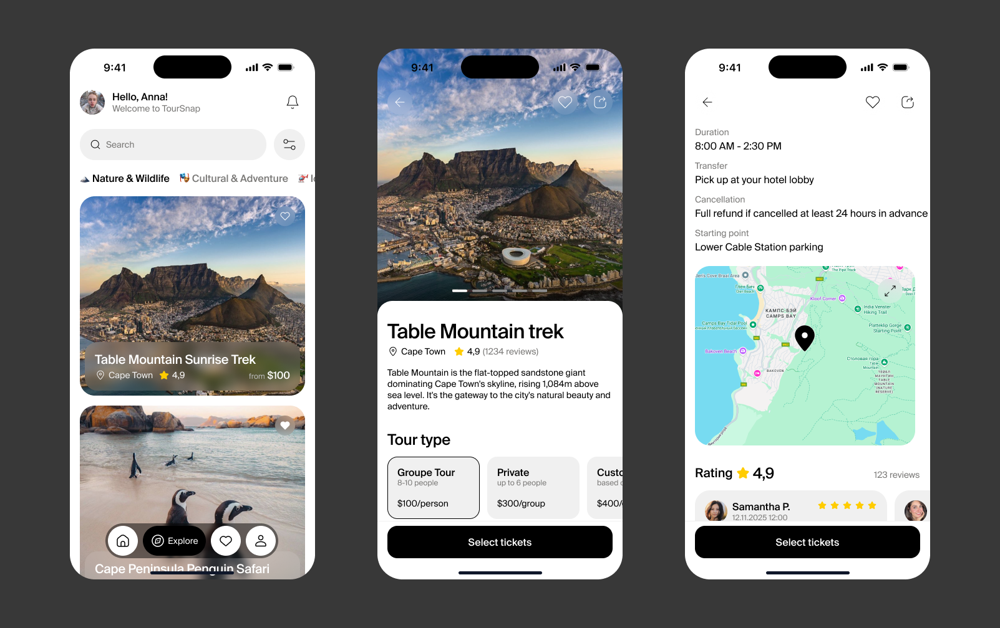

AI-платформа для управления расходами
Дизайн-система с нуля и экраны сотрудника для сервиса возмещения расходов с ИИ-распознаванием чеков: токены, UI-kit, Foundations, статусы.

Оплата обучения
Спроектировала сервис для оплаты обучения, где студенты могут оплачивать счета, отслеживать платежи, управлять балансом и видеть задолженность.

Конструктор курсов в LMS
Разработала интерфейс конструктора курсов для методистов, который помогает создавать, наполнять и публиковать учебные курсы.

Расписание университета
Сервис расписания для студентов и преподавателей Synergy.

Обучение в LMS
Образовательная платформа с нуля: четыре итерации от MVP для ДПО до университетского цикла с семестрами, пересдачами и прогрессом на 40+ занятий.

Концепты
Визуальные исследования и эксперименты: поиск характеров, стилей и решений вне продуктовых рамок.
Более пяти лет проектирую цифровые продукты: от CRM и корпоративных порталов до EdTech-платформ и дизайн-систем. Сейчас работаю старшим продуктовым дизайнером в университете «Синергия», развиваю LMS платформу и личный кабинет студента.
Люблю разбираться в сложных продуктах, находить связи между пользовательскими задачами и бизнес-процессами и превращать запутанные сценарии в понятные интерфейсы. Для меня дизайн сначала про то, как продукт работает, и уже потом про то, как он выглядит.
С ней комфортно работать над сложными задачами. Она быстро погружается в продукт, умеет разобраться в потребностях пользователей и предложить понятное решение. Не просто рисует интерфейсы, а думает о том, как продукт будет работать в целом. Всегда аргументирует свои решения и открыта к обсуждению.
Нравится системный подход к работе. Макеты всегда хорошо проработаны, логика сценариев понятна, а спорные моменты обсуждаются заранее. Она учитывает технические ограничения и готова вместе искать решения. Благодаря этому передача дизайна в разработку проходит гораздо проще.
Самостоятельный и ответственный дизайнер, которому можно доверить большие задачи. Умеет работать с неопределённостью, видеть проблемы продукта и доводить решения до реализации. Хорошо взаимодействует с командой, внимательно относится к деталям и всегда стремится сделать результат лучше.
Ключевые результаты
Запустила в LMS сервисы, которыми пользуются 100 тыс. активных студентов
Спроектировала и вывела в прод 20+ сервисов
Создала и развивала дизайн-систему из 235 компонентов, которую используют 4 дизайнера и 11 разработчиков
Чем занимаюсь
Проектирую сервисы LMS и личного кабинета студента: обучение, курсы, оплата, расписание
Провожу исследования: глубинные интервью, юзабилити-тесты, бенчмарки, опросы
Веду продукты итерациями: от гипотез и прототипов до передачи в разработку и проверки результата
Интранет для Сбера
Корпоративный портал банка «Открытие» на 22 000+ сотрудников
Платформа приёмки и диагностики машин для Kia
Приложение корпоративного портала для ИНК
Сайт для фармацевтического холдинга Boiron
Продуктовые страницы: Оциллококцинум, Стодаль, Гомеовокс
Постоянно прокачиваю навыки через менторства и курсы: продуктовые исследования, UI, AI, vibe coding.


Обожаю путешествия: за плечами уже 35 стран, и это только начало. Люблю хайкинг, природу и маршруты с невероятными видами. Играю в пиклбол, экспериментирую с острой азиатской кухней, интересуюсь инвестициями и изучаю психологию.